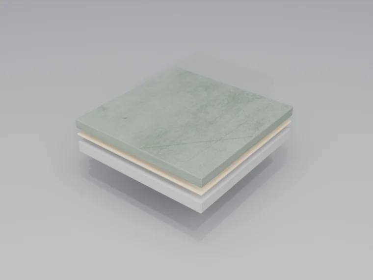

מערכות היברידיות פוליאוריתן-מלט המתוכננות למחזורים תרמיים קיצוניים. ממים רותחים ועד טמפרטורות מקפיא — בלי סדיקה. אמת המידה לתעשיית עיבוד המזון והמשקאות.
היכן פוליאוריתן-מלט מצטיין
פוליאוריתן-מלט היא מערכת הרצפה היחידה המתוכננת במיוחד לדרישות סביבות עיבוד המזון, שבהן זעזוע תרמי, ניקוי אגרסיבי ודרישות תברואה מתכנסים יחד.
עיבוד מזון ומשקאות
מבשלות בירה, מחלבות, עיבוד בשר. שטיפות חמות, ניקוי בחומרים בסיסיים, חשיפה לקיטור. אמת המידה בתעשייה.
מטבחים מסחריים
שפך שמן חם, מים רותחים, ניקוי מתמיד. המרקם נבחר בהתאם לסביבה הרטובה ולשיטת הניקוי.
פרמצבטיקה
תואם ניקוי במקום (clean-in-place). עומד בפני פרוטוקולי חיטוי אגרסיביים.
מאפיות ומכבסות
ממשקי תנור חמים, חשיפה לקיטור, לחות מתמדת ועמידות לחומרי ניקוי.
בנוי לעמוד בקשיים
מערכות פוליאוריתן-מלט הן מלטים בבנייה עבה הדורשים תכן ניקוז נכון והכנת תשתית לביצועים מיטביים.
- שיפוע לניקוז — נדרש שיפוע מינימלי של 1:80. אנו יוצקים שכבות יישור כדי ליצור ניקוז נכון
- התזת חרסיות (shot blast) — פרופיל אגרסיבי (CSP 5-7) לקשר מכאני לתשתית
- קוב משולב — קוב משולב במפגשי קיר מבטל מישקי פינות
- תעלות ניקוז — ניקוז מפלדת אל-חלד משולב במערכת הרצפה
- סבילות לחות — פוליאוריתן-מלט סובל לחות, אך יש לטפל בעודפי מים
ארכיטקטורת המערכת
מערכות פוליאוריתן-מלט משלבות את החוזק של הצמנט עם הגמישות והעמידות הכימית של הפוליאוריתן.

מערכת היאחזות
פריימר אפוקסי או פוליאוריתן יוצר קשר כימי לבטון המוכן. קריטי להיאחזות תחת מאמץ תרמי.
מלט פוליאוריתן-מלט
מלט צמנטי מאוגד בפוליאוריתן, ביישום במאלג' לעובי הנדרש. מכיל אגרגטים מיוחדים ליציבות תרמית ולעמידות שחיקה.
שכבת איטום
שכבה עליונה של פוליאוריתן אוטמת את פני השטח, מספקת עמידות כימית, וקובעת את רמת מרקם ההחלקה.
אפשרויות מרקם
התנגדות החלקה היא קריטית בסביבות עיבוד מזון רטובות. אנו מציעים את מלוא טווח המרקמים:
חלק (R10)
קל לניקוי, התנגדות החלקה מתונה. אזורי עיבוד יבשים.
בינוני (R11)
איזון בין יכולת ניקוי לאחיזה. רוב יישומי עיבוד המזון.
מחוספס (R12)
התנגדות החלקה גבוהה יותר לאזורים רטובים/שומניים. דורש מעט יותר מאמץ בניקוי.
עבודה כבדה (R13)
אחיזה מרבית לתנאים רטובים קיצוניים. אזורי ניקוז תעשייתיים.
יתרונות מרכזיים
- עמידות לזעזוע תרמי — בנוי לשטיפות חמות, חדרים קרים ומחזורי טמפרטורה כאשר מצוין העובי הנכון.
- קיטור ומים חמים — מתוכנן לניקוי קיטור יומי ולשטיפות חמות. אמת המידה בתעשיית עיבוד המזון.
- עמידות כימית — עומד בפני חומצות אורגניות רבות, חומרים בסיסיים וכימיקלי ניקוי כשהוא מותאם לרשימת החשיפה.
- אפשרויות מרקם — האחיזה מותאמת לדרישות המים, השומן, הניקוז והניקוי.
- עמידות בהלם — מלט בבנייה גבוהה בולע הלם. ציוד נופל, עגלות משטחים, עומסים כבדים.
- תכן הניתן לניקוי — שדה אטום ללא מישקים עם קוב משולב ופירוט ניקוז היכן שמצוין.
התאמה טובה
מטבחים מסחריים, עיבוד רטוב, מחלבות, מבשלות בירה, מעברי חדרים קרים ואזורים עם שטיפות חמות.
לא הבחירה הראשונה
אולמות תצוגה בברק גבוה, ציפויים דקים מאוד, פנים דקורטיביים או אזורים שבהם התשתית אינה יכולה לעמוד בהכנה מכאנית.
לבדוק תחילה
שיפועי ניקוז, קובים, הסרת ציפוי קיים, מחזורים תרמיים, כימיקלי ניקוי, רמת מרקם ותוכנית השבתת ייצור.
פרוטוקול תחזוקה
פוליאוריתן-מלט מתוכנן במיוחד למשטרי ניקוי אגרסיביים. המערכת משתפרת עם ניקוי סדיר.
סוף משמרת ייצור
שטיפת מים חמים, קרצוף בחומר ניקוי, שטיפה. הרצפה מתוכננת למחזור היומי הזה.
שבועי
ניקוי יסודי בכימיקלים מתאימים. חומר בסיסי או חומצי לפי דרישת המוצר.
רבעוני
בדיקת ניקוזים, קובים ואזורי בלאי גבוה. תיקוני נקודה לפי הצורך.
שנתי
בדיקת מערכת מלאה. ציפוי איטום חוזר לאזורי תנועה גבוהה לפי הצורך.